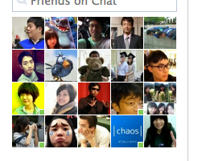
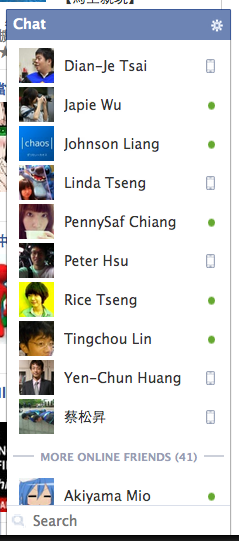
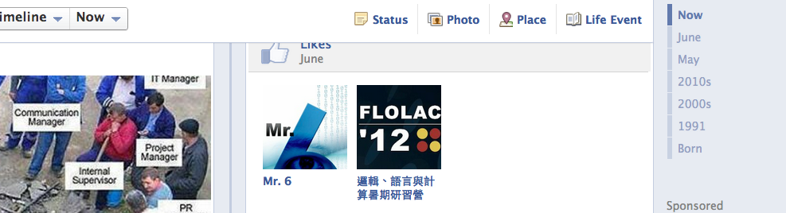

Your browser doesn't support the features required by impress.js, so you are presented with a simplified version of this presentation.
For the best experience please use the latest Chrome, Safari or Firefox browser.
Design Patterns Final Project
Social Network Search
郭冠宏 b97902115
大綱
動機
Facebook 沒有搜尋的功能。分析混亂中的資料。
工具
Python , C/C++ libraries, Chrome(plugin)
難題
network, json string, gui
動機
找人？


找文章？

工具
python
C/C++ libraries
Google Chrome
Python
孔子
錯惹 ...
前人的研究指出
理論與實踐不能有效的做結合。
遊戲學習的失敗，來自於設計的選擇。
化解理論與實踐的隔閡
Schön 所提出的 Appreciation Systems
配合使用 Grounded Theory
方法
面試
Semi-Structured
訪談大綱，根據談話的進度適當追問和修正問題。
Grounded Theory
透過資料的收集與檢驗的連續過程，以突顯研究現象的特質。若發現有相同的特質，則可歸納到抽象層次的概念
受測者
全部都是來自GDC 或 IGDA 的遊戲設計相關人士
20歲 至 50歲。 13位男性 4位女性。
反正都是武林豪傑...
7 work at or co-founded small game studios
1 works at a social software startup after 20 years of game design
1 is a famous game designer with many AAA titles
3 characterize themselves now as academics but have a strong background in professional game development
1 bridges between a research think tank and producing games
3 teach on the side while they work as designers
1 is a highly placed team member at a large game company
樂趣
我們可以摧毀所有跟教育不相干的事情，就是不能摧毀遊戲。
精緻
並不是都要做出高成本的遊戲，藉由創造力帶出不同美學價值。
遊戲是有效且強大的學習機器
自從我玩了大航海時代，每次地理都考一百分。
合作分工
我們都知道有時候補師連打贏史萊姆都很難。但是哪個團隊刷王的時候是沒有補師的？
探討道德及倫理，並透過行動實踐.
有些問題是無解的，而了解他是無解，就是答案的一部分。
限制與可能性的探索
從物理遊戲中得知哪些結構是可行的，哪些會崩塌。
憤怒鳥的遊戲也告訴我們，朝約莫45度發射，可以射比較遠。